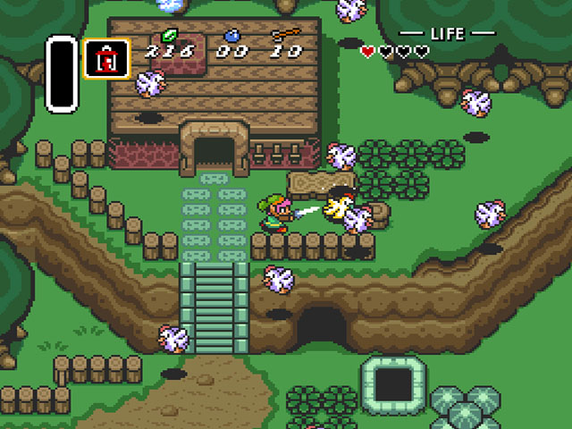

Darpa Games

Web creada con el propósito de exponer información sobre el desarrollo del videojuego Shiawase Story.
Bienvenidos al Diseño del Videojuego
En la habitación de una enorme mansión, una joven intenta despertar y así escapar de su pesadilla. Cuando por fin consigue abrir sus párpados, se encuentra en un ambiente totalmente desconocido para ella.
A pesar de la confusión y el miedo que atormentan hasta el último rincón de su cuerpo, decide aferrarse al único sentimiento que la mantendrá con vida, su valentía.
Dicha emoción la guiará en su camino, y le enseñará que para sobrevivir deberá recolectar todo tipo de ítems para así poder enfrentarse a los monstruos que protegen su cautividad.
A medida que recorre la interminable mansión, una idea revolotea sin cesar en su cabeza: los objetos y los monstruos con los que se encuentra, coinciden innegablemente con los juguetes que compartía con su hermano y con los que siempre jugaban a "Monstruos y brujas".
Al seguir avanzando, se da cuenta que sus técnicas de batalla deben evolucionar, ya que a la vez que aumenta su astucia, crece también la ferocidad de los monstruos.
Para poder derrotar a sus enemigos, la joven tendrá que armarse de mejores objetos. Sólo así tendrá mayores posibilidades de sobrevivir.
¿Podrás ayudarla a escapar de este horrible lugar?
Objetivo del juego
Deberás guiar a la protagonista en su paso por las interminables habitaciones de la mansión, ayudándola a vencer a sus audaces enemigos mediante la recolección de los ítems más variados.
Protege a la joven hasta que consiga escapar, quizás así averigües como ha llegado allí...
Clasificación del tipo de juego
Este juego pertenece al género RPG y va orientado a las mujeres jóvenes de entre 10 y 15 años, requerimiento básico del proyecto a realizar. Según la investigación que hemos llevado a cabo, y gracias a fuentes como hermanas, amigas, páginas de internet y tendencias de videojuegos que prefieren las chicas de esa franja de edad, hemos comprendido que los juegos más populares no dependen tanto del género, si no de la edad del jugador. Por lo tanto, debemos intentar que los recursos gráficos se adapten lo máximo posible a ese rango de edad. Para tratar de acercarnos más a los requerimientos del juego, hemos decidido que el personaje principal sea una niña de edad similar a la de las jóvenes a las cuales va dirigido nuestro juego, las cuales podrán sentirse más identificadas con la protagonista.
Historia del personaje principal
El juego comienza con una joven despertando de su pesadilla. No entiende el por qué de su localización en una mansión tan gigante y totalmente desconocida para ella. En ese momento se siente triste, asustada y confundida. La habitación que la rodea no le es para nada familiar. Sin embargo, mientras va investigando poco a poco el lugar, se da cuenta de que los objetos que hay desperdigados por los diferentes rincones de la extraña casa le suenan, hasta caer en una afirmación que la confunde más aún: ¡son sus juguetes!
Sin darle tiempo a entender lo que está ocurriendo, escucha de fondo unos espantosos ruidos que erizan su piel desde los pies a la cabeza. Provienen de una habitación, a la cual lentamente decide acercarse mientras que su corazón le grita que huya de allí lo más rápido que pueda. A través de una puerta medio abierta, ve a un ser monstruoso. En ese momento, el miedo toma el control de su cuerpo, pero antes de dejarse llevar por el pánico, se da cuenta de que durante esos breves instantes que le parecieron eternos, ha podido visualizar algo que le parece extrañamente familiar. Inmediatamente, le recuerda a una figurita de juguete de su hermano, ¡pero ésta está viva!

De repente, a su mente le vienen los recuerdos de hace unos días, en los que estuvo jugando con su hermano a “Monstruos y Brujas”. Ella siempre conseguía la victoria destruyendo al monstruo de su hermano con un juguete en específico…
Dos segundos pasaron hasta que asoció que dicho juguete era el objeto que encontró en el cuarto en el cual despertó, una especie de varita mágica. Sin dudarlo, decide apaciguar su miedo, entra a la habitación, y con la varita derrota al monstruo sin piedad.
Cámara del jugador y controles
Nuestro equipo considera que la cámara de tipo Top-down es la más óptima para los juegos del género RPG. Además, los mapas están creados con tiles, por lo que el movimiento y la exploración por las habitaciones resultará mas eficiente y de mayor facilidad. De forma adicional, el hecho de elegir este tipo de cámara nos va a aportar la no implementación de los saltos, por lo que la complejidad de la programación será menor, así como la demanda de CPU.

En cuanto a los controles, hemos decidido que al ser un juego orientado a PC, éstos deben poder realizarse únicamente mediante el teclado. Esto podrá ayudar a cualquier usuario que quiera probar nuestro juego, y que solo disponga de un pórtatil. De esta manera, crearemos un juego lo más independiente posible del hardware, expandiendo más los horizontes de potenciales jugadores.
Interfaz de usuario
En cuanto al HUD, el jugador deberá visualizar los iconos de vida que aparecen en forma de corazones en la parte superior derecha de la pantalla . Además, se implementará un inventario que contenga las cinco pociones posibles (vida, experiencia, fuerza, velocidad y dureza) en la zona inferior de la pantalla. Queremos crear un inventario similar al que se encuentra en el videojuego "Minecraft", que resulte sencillo y que no sea abusivo en cuanto a la interfaz gráfica.

Música y gráficos
Nuestro grupo de trabajo es de carácter no mixto, por lo que todos somos estudiantes de ingeniería. Solo dos de nosotros estamos dotados de cualidades de diseño gráfico básico.
Debido a esto, los recursos gráficos se tomarán de páginas de arte libre. Se intentará crear los sprites básicos como el inventario, HUD y los botones. Sin embargo, los SpritesSheets de los mapas se tomarán de Internet referenciando en todos los casos la procedencia de dicho material, para así reconocer el mérito de los creadores de estos recursos. Este procedimiento se realizará de forma completamente análoga con respecto al audio.
Las herramientas utilizadas para el montaje y edición de los fondos y sprites han sido Photoshop, Gimp y Tiledmap. Photoshop y Gimp se han utilizado para la edición de los fondos, y Tiledmap se ha empleado para la creación de los mapas. Por otra parte, el programa WavePad ha servido para recortar algunos sonidos.